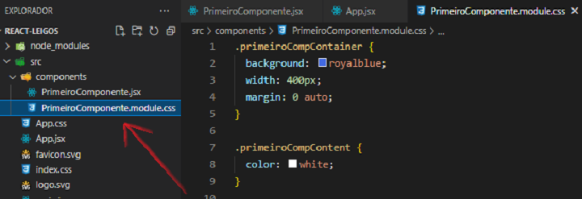
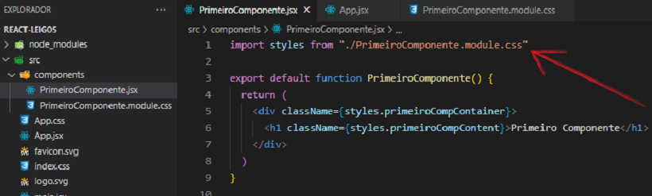
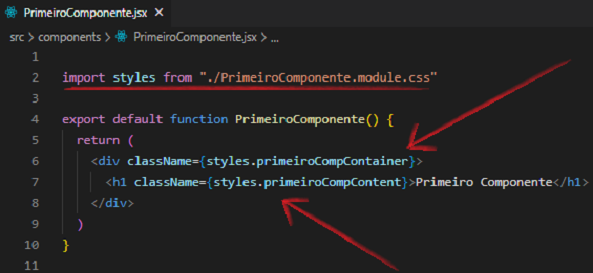
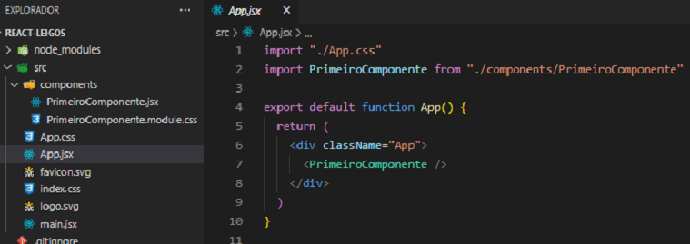

CSS nos Componentes
Na introdução vimos como aplicar o css no index.css para estilizar de forma global. Também trabalhamos o css no arquivo App.css para configurar os estilos do App.jsx.
É necessário estilizar cada componente para mantermos a organização do projeto e facilitar a compreensão do mesmo.
Então criaremos o arquivo NomeComponente.module.css e o chamaremos dentro do componente.


Dentro do arquivo PrimeiroComponente.module.css é onde teremos o css das classes. Para aplicarmos o css criado devemos importar o PrimeiroComponente.module.css dentro do componente PrimeiroComponente.jsx. E para usarmos de fato, devemos referenciar os estilos criados através do className.

Ao executarmos o projeto no navegador através do comando no Terminal npm run dev, teremos a seguinte aparência:

Perceba que somente foram estilizados a div e o h1 que estão inseridos no PrimeiroComponente.jsx.
O arquivo App.jsx se encontra da seguinte forma:
